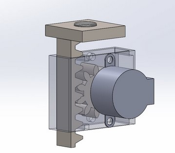
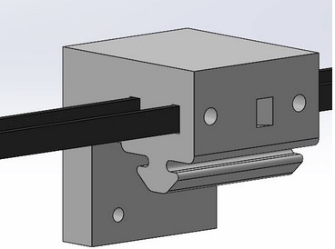
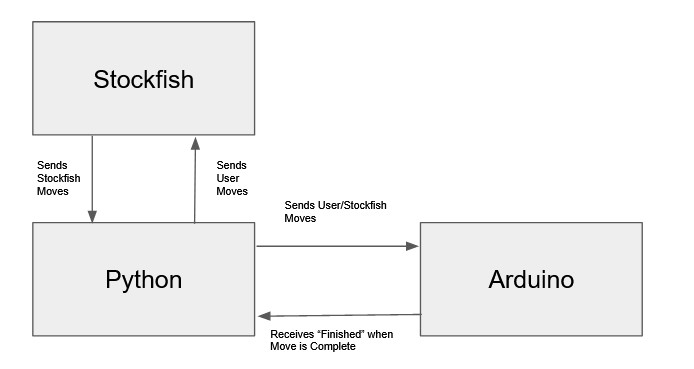

Autonomous Chessboard
Knight G1->F3
Assignment Objectives
The main assignment objective was to design a robot that has 2.5 degrees of freedom. As a team, we decided to create a chessboard that enabled a user to play chess against a computer on a physical board rather than using an application. The basic functionality of the chessboard is by using stepper motors and a belt to move the end effector in the X and Y directions. The end effector is a rack and pinion system that holds a magnet, which enables the end effector to attract a chess piece when extended. All the chess pieces are inserted with an iron screw, which enables the magnet on the end effector to attract the chess pieces only when the rack and pinion system is extended. This is the basic structure of the autonomous chessboard. More information on the design and code can be found below. Moreover, links to the portfolios of my teammates can be found at the end of this section.
Design Sketches
The first step we took in finishing this assignment was sketching designs for the autonomous chessboard. The following images shows the rough sketches we made before desining the autonoumous chessboard.

Design CAD
The next step of the project was to design each individual component that should be 3D printed to build the structure of the autonoumous chessboard. The school provided us with the following:
- 8020 Aluminum Extrusions
- 3 Stepper Motors + 1 Small Stepper Motor
- Belts and Pulleys
- One Arduino MEGA
The following image is the CAD model for the end-effector. The end-effector is based on a rack and pinion system on which the magnet is held. The basic idea of this model is that a smaller stepper motor is connected to the rack and when the motor rotates, it also rotates the rack. This rotation of the rack will subsequently linearly move the pinion on which the magnet resides. Through this motion, we were able to move the magnet up and down in order to attract a specific piece and move it around on the chessboard.

The following image is the CAD model for the pulley-slider mechanism. This model is responsible for tensioning the belts, which is essential in moving the end-effector in the X and Y directions. This model has two slots; one end of the belt is passed through one slot and then wrapped around the relevant extrusion bar and the other end of the belt is pushed through the other slot. Moreover, one slot is angled so that the belt could be tensioned simply by pulling on the belt. In order to keep the belt in place, two screws were used to clamp the belt ends to pulley-slider.

The following image shows the assembly model of the whole mechanical part of the autonomous chessboard. It should be noted that other components were also modeled, such as brackets connecting the motor or pulley to the extrusions. These models can be seen in the image below. Once these designs were complete, we, then, 3D printed all these parts to construct the autonomous chessboard.

Code and Controls Implementation
For the coding element of this assignment, an Ardunio script and a Python script were used to control the autonomous chessboard. The python script included a stockfish library that enabled python to send moves to Stockfish, a free and open source chess-engine, and recieves the stockfish's best move. These moves were send to the arduino IDE, which then decides how much to move in the x,y directions and if the end-effector should be should rise or stay down. It should also be noted that with this chessboard, the user can either move his/her own pieces or can allow the chessboard to move it for them. The input for the moves should be entered by the user on the computer. The code for this assignment can be found on GitHub. The following flowchart shows the basic structure of how the code is working.

Testing Phase
The following are some videos of us testing out the controls of the autonomous chessboard. It should be noted that there were many roadblocks we faced as a team and we collaboratively came up with solutions to overcome these roadblocks.
Future Improvements
The following improvements could be made to further improve the product.
- Using a Raspberry Pi, which will eliminate the need for a computer
- Using extra sensors, such as the Hall effect sensor, or cameras to determine user moves. This way there will no need for the user to input every move.
- Better casing for the electronics, such that no wires will be protruding from the chessboard.
Chessboard in Action
The following videos show some of the autonomous chessboard's functionality, while playing with a user (Miguel Ianus-Valdivia).
Teammates
Aayush Amrit
Adam Bahlous-Boldi
Kyle Fieleke